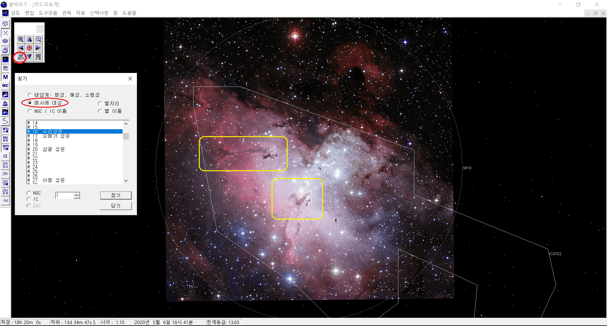
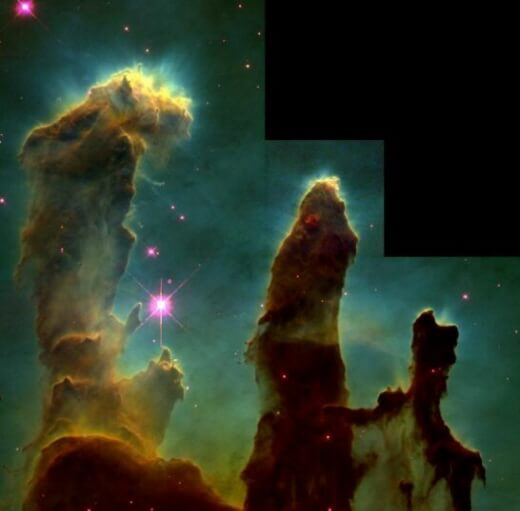

수리성운
허블우주망원경이 1995년 창조의 기둥을 찍으면서 더욱 유명해진 성운이다. 성운의 중앙에 뚜렷한 수리 모양의 암흑이 드리워진 모습은 보는 이의 감탄을 자아내게 한다. (아래 사진의 아래쪽 노란색 사각형) 수리성운을 처음 접한 사람은 이 암흑때문에 성운의 이름이 붙여졌을 것으로 짐작할 것이다. 그런데, 좀 더 찬찬히 살펴보면 성운 전체적으로 수리의 모습이 보인다. 중앙은 몸통이고 2시 방향으로 머리가, 10시와 4시 방향으로 양 날개를 펼친 모습이다. 암흑의 수리가 날렵한 맹금류의 모습이라면 커다란 수리는 솜털이 덮인 아기 새와 같은 귀여움도 느껴진다. 20세기 사진 기술이 발달하기 전까지는 주로 안시 관측이 이루어졌을 것이기에 성운 전체의 모습에서 '수리'라는 이름을 얻었을 것이다. 이후에 선명한 암흑 성운 사진과 함께 또 하나의 수리를 찾았을 것으로 추측된다.
두 마리의 수리 이외에 요정도 찾아 보자. 아래는 위 이미지에서 노란색으로 표시된 두 곳의 허블 망원경 사진이다. 수리성운의 요정은 별의 첨탑(Stellar Spire)이라고도 불리며, 어찌 보면 두 사람이 포옹하며 얼굴을 맞대고 있는 모습도 보이며, 더 확대해 보면 요정의 날개에서 고양이의 느낌도 보인다. 창조의 기둥은 허블우주망원경의 사진으로 20세기 가장 유명한 천체 사진 중 하나이다. 우주가 별을 창조하는 감동을 느껴보자. 이미지를 클릭하여 확대된 사진을 꼭 보기 바란다.

|
 창조의 기둥(위). 1995년, 허블우주망원경 |
|
수리성운의 요정(좌). 별의 첨탑(Stellar Spire)이라고도 불림. |
별바라기 활용법
- [성도][새성도 - 적도좌표계] 메뉴를 선택한다.
- 이동 도구모음에서 '찾기' 버튼을 클린한다.
- 찾기 윈도에서 '메시에 대상', 'M16'을 차례로 선택한다.
- '찾기' 버튼을 누르면 수리성운이 성도의 중앙으로 이동된다.
- 최대한 확대해 보자. '확대' 버튼이나 'Page Up' 키를 10회 이상 계속 누른다.
- 최대한 확대된 상태 (시야: 1.2도)에서 'Ctrl'과 확대 버튼을 함께 누름으로서 추가로 더 확대할 수 있다.
- 수리성운과 요정, 창조의 기둥을 찬찬히 살펴보자.
기타 사항
- 2020년 5월 현재, 별바라기에서는 수리성운, 오리온대성운, 콘성운, 안드로메다 은하에 대해서 사진 이미지를 제공한다.
- 수리 대신 독수리라는 말이 더 익숙할 수도 있다. 수리/독수리 비교 문서를 참조하자. 독수리보다는 수리가 맞다고 생각되어 별바라기에서는 수리성운으로 표현 했다.
- 별자리 이름도 독수리 대신 수리로 바꾸어야 하는데, 기술적인 문제로 아직 바꾸지 못했다.
별바라기 홈 최종 변경: 2020년 05월 31일